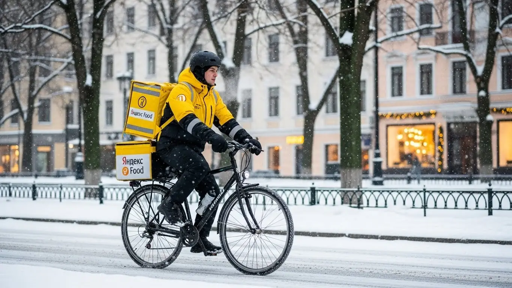
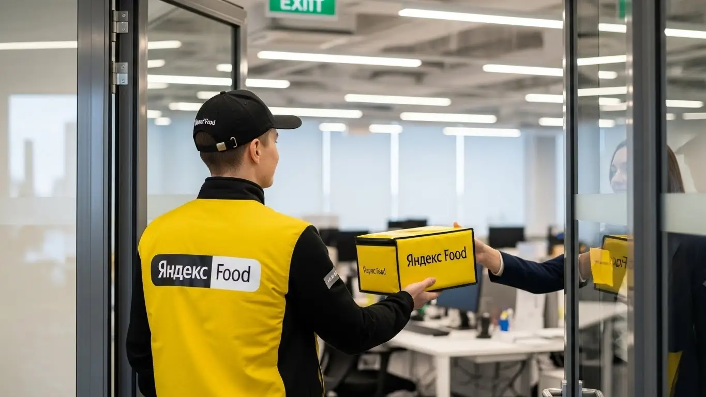

Работа курьером Яндекс Еда в Иваново: доход и условия в 2025-2026
- Работа курьером Яндекс Еды в Иваново: для кого эта вакансия и что вы получите
- Сколько вы будете зарабатывать курьером в Иваново: калькулятор дохода и разбор выплат
- Реальный заработок курьера в Иваново: смены и месячный доход
- График работы и форматы занятости
- Требования к кандидату и документы
- Самозанятость, налоги и юридическая чистота
- Пошаговое оформление и первый выход на линию в Иваново
- Пешком, на вело или на авто: что выгоднее в Иваново
- Районы, маршруты и «топовые» зоны заказов в Иваново
- Безопасность, страховка, штрафы и оплата простоя
- Плюсы и возможные минусы работы курьером в Иваново
- Реальные истории и отзывы курьеров из Иваново
- Ответы на главные вопросы о работе курьером Яндекс Еды в Иваново
- Короткие ответы на главные вопросы
- Итоги и ваш следующий шаг
Все города
Думаешь взять желтую сумку и пойти катать заказы по Иваново, глядя на обещания высокого дохода? Идея хорошая, но давай на чистоту. Тебя наверняка гложут сомнения: а не будешь ли ты в итоге зарабатывать копейки, стоя в пробках на Ленина? Не убьешь ли свой велосипед или подвеску машины на ивановских дорогах за первый же месяц? И сколько реально останется в кармане после всех комиссий и расходов? Это не общая статья «для всех», это разбор полетов именно для тех, кто собирается работать курьером Яндекс Еды и Яндекс Лавки в нашем городе.
Поверь, просто скачать приложение и выйти на линию — прямой путь к разочарованию. Реклама тебе не расскажет, что доход в центре и, например, в Авдотьино или Суховке — это две большие разницы. Что из красивой цифры в приложении нужно вычесть налог самозанятого, бензин или проезд, амортизацию и обед. Большинство новичков в Иваново наступают на одни и те же грабли: гоняются за дешевыми заказами, не понимают, как работает приоритет, и в итоге к концу месяца видят совсем не те деньги, на которые рассчитывали. Чтобы заранее оценить свои возможности, стоит изучить все детали. Узнать актуальные требования, посмотреть калькулятор дохода и подать заявку можно на официальной странице про работу курьером Яндекс Еда в Иваново.
Здесь мы честно разберём всю «внутрянку». Посчитаем, сколько на самом деле можно заработать в Иваново пешком, на велосипеде и на своей машине с учетом местных реалий. Выясним, в каких районах города самые «жирные» заказы, а куда лучше не соваться. Я покажу на примерах, как ивановская погода, праздники и трафик у «Серебряного города» или «Тополя» влияют на твой итоговый чек. Разберем систему мотивации и как не получать блокировки. И, конечно, сравним, что предлагают конкуренты здесь, в Иваново.
Меня зовут Алексей. Я сам не один год откатал с термокоробом за спиной по ивановским улицам, а сейчас у меня свой небольшой таксопарк-партнёр, так что я знаю эту кухню с обеих сторон — и как курьер, и как тот, кто помогает им выходить на линию. Никакой рекламной шелухи и пустых обещаний тут не будет, только реальный опыт и цифры. В общем, садись поудобнее. Сейчас всё разложу по полочкам, без прикрас. Начнём с главного.
Чтобы тебе было проще сориентироваться, дальше будет короткий гид по ключевым темам статьи.
Что ты точно узнаешь из этого разбора
В этой статье ты ТОЧНО узнаешь:
- Сколько реально можно заработать в Иваново за смену, если вычесть бензин и налоги?
- В каких районах Иваново самые «жирные» заказы и как ловить пиковые часы с высокими коэффициентами?
- Что выгоднее в Иваново — работать пешком, на велосипеде или на своей машине?
- За что на самом деле снижают рейтинг и как работает система «штрафов» в Яндекс Еде?
- Как работает оплата простоя и что делать, если заказов в твоей зоне почти нет?
- Почему нужно оформлять самозанятость и насколько это сложно на самом деле?
А если тебе некогда читать всю статью — переходи сразу к заключению, где ты найдёшь короткие ответы на все эти вопросы и указания, в каких разделах искать подробности.
А вот основные цифры и факты о работе в Иваново в одной картинке.
Работа курьером в Иваново: ключевые цифры
Работа курьером Яндекс Еды в Иваново: для кого эта вакансия и что вы получите
Кому подойдёт эта работа в Иваново
Давай начистоту: работа курьером — это не для всех, но подходит она гораздо большему числу людей, чем принято думать. В Иваново это отличный вариант для студентов, которым нужна подработка после пар. Свободный график позволяет выходить на 3–4 часа вечером и иметь свои деньги. Кстати, стать курьером можно и с 16 или 17 лет — для этого понадобится письменное согласие от родителей. Работать пешим курьером или на велосипеде можно будет ограниченное количество часов, как положено по закону.
Эта вакансия в Яндекс Еде — спасение для тех, у кого нет опыта работы. Здесь не смотрят на диплом и прошлые заслуги, главное — твоя ответственность и желание работать. Также это хороший вариант для водителей-курьеров на своем авто, которые хотят дополнительный доход к основной работе или просто ищут стабильные заказы. Ну и, конечно, для всех, кому важны быстрые деньги — ежедневные выплаты приходят на карту, а не раз в месяц.
Главные преимущества для жителей районов Ленинский, Фрунзенский, Октябрьский
Одно из главных удобств — возможность работать рядом с домом. Тебе не нужно тратить час-полтора на дорогу до «офиса». Живёшь, например, в Ленинском районе, в районе Сортировки или Рабочего посёлка — просто выходишь из подъезда, включаешь приложение «Яндекс Про» и начинаешь выполнять заказы в своей же локации. Можно заранее выбрать удобные районы для доставок.
То же самое касается и жителей Фрунзенского или Октябрьского районов. В этих частях города полно ресторанов и магазинов, подключённых к Яндекс Еде и Доставке. Это значит, что ты можешь работать на знакомой территории, где знаешь каждый двор и короткий путь. Экономия времени и денег на проезд напрямую влияет на твой чистый заработок за смену.
Краткое обещание по доходу и условиям
Если говорить о деньгах, то зарплата курьера в Иваново — это вполне реальные цифры. При частичной занятости, выходя на смены по 4–5 часов несколько раз в неделю, можно спокойно зарабатывать 20 000–30 000 рублей в месяц. Если же рассматривать это как основную работу и уделять ей по 8–10 часов, то доход курьера на автомобиле может доходить и до 70 000–80 000 рублей. Пешие курьеры и велокурьеры при полной занятости получают в среднем 45 000–60 000 рублей.
Ключевые условия работы просты и понятны: свободный график, который ты сам составляешь в приложении, ежедневные выплаты на банковскую карту и отсутствие требований к опыту. Тебя всему научат на коротком онлайн-инструктаже, выдадут фирменный термокороб, и можно выходить на линию. Оформление официальное, через самозанятость, так что проблем с легальностью дохода не будет.
Сколько вы будете зарабатывать курьером в Иваново: калькулятор дохода и разбор выплат
Из чего складывается доход курьера
Твой заработок — это не просто ставка за час, а гибкая система. Он складывается из нескольких частей, и важно понимать каждую, чтобы влиять на итоговую зарплату. Это базовая оплата за каждый выполненный заказ и доплата за расстояние — учитывается и путь до ресторана, и путь до клиента. Чем дальше везти, тем больше платят.
Кроме того, есть повышающие коэффициенты. В часы пик (обед, ужин), в плохую погоду или в зонах с высоким спросом стоимость заказов умножается на определённый коэффициент. Это самый простой способ заработать больше за то же время. Также сервис начисляет персональные бонусы за выполнение определённого числа заказов. И не забывай про чаевые — всё, что оставляет клиент, идёт тебе в карман без комиссий. А ещё есть уникальные условия: оплата простоя, если заказов долго нет, и возможная компенсация проезда на общественном транспорте для пеших курьеров.
Как пользоваться калькулятором дохода
Чтобы прикинуть свой потенциальный заработок, на сайте есть специальный калькулятор. Пользоваться им элементарно. Сначала выбираешь свой город — Иваново. Затем указываешь, как планируешь доставлять: как пеший курьер, велокурьер или на своём автомобиле. От этого выбора сильно зависит скорость и, соответственно, количество выполненных заказов.
Дальше двигаешь ползунки: сколько часов в день и сколько дней в неделю ты готов работать. Система на основе средних данных по городу покажет тебе примерный доход за день и за месяц. Понятно, что это прогноз, а не твёрдое обещание, но он даёт вполне реалистичное представление о том, на какие цифры можно ориентироваться. Полезный инструмент, чтобы понять, стоит ли эта подработка твоего времени.
Прикинь свой возможный доход в Иваново
8 часов
5 дней
Твой примерный доход в месяц:
Это примерный расчёт на основе средней ставки в Иваново (≈420 ₽/час). Реальный доход зависит от спроса, бонусов и твоего графика.
Чтобы увидеть актуальные условия, требования и сразу подать заявку, загляни на страницу про работу курьером Яндекс Еда в твоём городе — там же есть подробный FAQ и форма для анкеты.
Примеры расчёта для пешего, вело- и авто‑курьера в Иваново
Давай на конкретных примерах. Пеший курьер, студент, решил поработать в пятницу вечером 4 часа в центре Иваново, в районе проспекта Ленина и площади Революции. Там много кафе, заказы короткие, но их вал. За счёт плотности и небольшого бонуса за количество он может заработать около 1200–1500 рублей.
Велокурьер выходит на 6-часовую смену в выходной и катается между спальными районами, например, в районе ТРЦ «Ясень» и прилегающих кварталах Фрунзенского района. Он быстрее пешего, берёт заказы на 2–3 км, поэтому его заработок за такую смену может составить 2000–2600 рублей.
Курьер на своем авто работает полную 8-часовую смену, особенно в дождливую погоду. Он берёт дальние заказы по всему городу, от Авдотьино до ТЭЦ-3, и крупные доставки из гипермаркетов. За счёт повышенного коэффициента из-за погоды и стоимости дальних заказов его доход за день может достигать 3500–4500 рублей и даже больше.
Реальный заработок курьера в Иваново: смены и месячный доход
Поговорим начистоту: цифры в рекламе — это ориентир, а не гарантия. Твой реальный заработок курьером в Иваново будет зависеть от того, как ты работаешь, когда и на чём. Я видел парней, которые за 4 часа делали больше, чем другие за 8. Всё дело в подходе. Здесь я разложу по полочкам, на какой доход можно рассчитывать в Яндекс Еде, если работать с головой.
Диапазон дохода для подработки и полной занятости
Если тебе нужна подработка на 2–4 часа в день, чтобы закрыть мелкие расходы или совмещать с учёбой, цифры будут одни. Если же ты готов работать по 8–10 часов, как на основной работе, — зарплата будет совсем другой.
Для подработки в Иваново расклад примерно такой. Пеший курьер или велокурьер за короткую смену в 3–4 часа может заработать 600–1200 рублей. В месяц, если выходить 4–5 раз в неделю, набегает 12 000–25 000 рублей. Курьер на своем авто за то же время получит больше, около 900–1600 рублей, но не забывай вычитать расходы на бензин. В месяц это уже 18 000–30 000 рублей чистыми.
При полной занятости доход серьёзнее. Пеший курьер или курьер на велосипеде, работая по 8 часов, может рассчитывать на 2000–3500 рублей в день. За стандартный рабочий месяц (22–24 смены) это выливается в 45 000–75 000 рублей. Водитель-курьер на личном авто при полной загрузке делает 3000–5500 рублей в день. За вычетом топлива и амортизации, месячный доход может достигать 65 000–90 000 рублей, а в удачные месяцы и больше.
Как район, время суток и погода влияют на доход
Запомни три кита высокого заработка: место, время и погода. Если ты их игнорируешь, будешь возить дешёвые заказы и жаловаться на жизнь. Если используешь — будешь в плюсе.
В Иваново больше всего заказов, конечно, в центре: проспект Ленина, Шереметевский проспект, район площади Революции. Здесь много кафе и офисов, откуда часто заказывают в Яндекс Еде. Также «жирные» зоны — это крупные ТРЦ вроде «Серебряного города» и «Ясеня». Вечером спрос смещается в спальные районы: Московский, Авдотьино, Суховка-Дерябиха.
Время — твой главный козырь. Пиковые часы — это обед (с 12:00 до 14:00) и ужин (с 18:00 до 21:00). В это время на карте в приложении появляются зоны с повышенным спросом и, соответственно, включаются повышающие коэффициенты. Пятница вечер, суббота и воскресенье — это практически один большой пик. А вот утро понедельника может быть совсем «глухим».
Погода — это подарок для курьера. Как только начинается дождь, снегопад или сильная жара, большинство сидит дома и заказывает доставку. Одновременно с этим многие курьеры не хотят выходить на линию. Спрос резко растёт, а предложение падает — коэффициенты взлетают до небес. В такие дни можно за 3–4 часа заработать как за целый день в хорошую погоду. И чаевые, кстати, в непогоду оставляют чаще.
Советы по увеличению заработка от опытных курьеров
Чтобы не просто работать, а именно зарабатывать, нужно подходить к делу стратегически. Вот несколько проверенных советов от опытных сотрудников.
Во-первых, планируй смены. Не выходи на линию хаотично. Заранее бронируй в приложении плановые слоты на самое выгодное время — вечера и выходные. Система видит твою надёжность и будет давать больше заказов.
Во-вторых, будь мобильным. Не сиди на одном месте, если заказов нет. Открывай карту спроса в «Яндекс Про» и двигайся в «фиолетовую» зону, где горит высокий коэффициент. Иногда есть смысл проехать 10–15 минут до такой зоны, чтобы потом 2–3 часа работать без простоя с хорошей доплатой.
В-третьих, сочетай форматы, если есть возможность. Например, у тебя есть и велосипед, и машина. В час пик в центре Иваново, где всё стоит в пробках, выгоднее работать на велосипеде — ты будешь быстрее. А вот для дальних доставок в пригород или во время сильного снегопада лучше использовать автомобиль. Это позволяет быть максимально эффективным в любой ситуации.
Вот реальный кейс. Парень-студент, работает велокурьером. Его подработка сначала приносила копейки, по 200-300 рублей за выход, так как он выходил днём между парами. Я посоветовал ему сменить тактику. Он стал брать слоты с 18:00 до 22:00 со среды по воскресенье и крутиться в районе ТРЦ «Серебряный город» и проспекта Ленина. В итоге его средний заработок за те же 4 часа вырос до 1000-1500 рублей. Просто потому, что он начал работать в правильное время и в правильном месте.
Сравнение среднего дохода в Иваново
| Тип курьера | Подработка (3-4 часа/день) | Полная занятость (8-10 часов/день) |
|---|---|---|
| Пеший курьер | 12 000 – 25 000 ₽/мес. | 45 000 – 65 000 ₽/мес. |
| Велокурьер | 15 000 – 28 000 ₽/мес. | 50 000 – 75 000 ₽/мес. |
| Автокурьер (чистыми) | 18 000 – 30 000 ₽/мес. | 65 000 – 90 000 ₽/мес. |
В итоге, твой доход в Иваново напрямую зависит от твоей стратегии. Можно работать много и бестолково, а можно — меньше, но в разы эффективнее. Главное — анализировать спрос и не бояться менять локацию.
Мой совет: не гонись за количеством часов. Лучше отработай 4 часа в пятницу вечером в дождь, чем 8 часов в солнечный полдень вторника. Результат по деньгам будет одинаковый, а устанешь в два раза меньше.
График работы и форматы занятости
Главный плюс этой работы, который ценят все, — это свободный график. И это не просто слова. Ты действительно сам решаешь, когда и сколько работать. Такие условия работы курьером в Яндекс привлекают многих. Никаких начальников, стоящих над душой, никаких обязательных смен от звонка до звонка. Это идеальный вариант для тех, кто хочет совмещать доставку с учёбой, другим делом или просто ценит свою свободу.
Подработка после учёбы или основной работы
Совмещать доставку с чем-то ещё — проще простого. Большинство новичков без опыта как раз так и начинают. Вот пара типичных примеров из жизни в Иваново.
Первый сценарий — студент местного вуза, например, ИвГУ или «политеха». Учёба заканчивается в 15-16 часов. Он приезжает домой, обедает, делает дела и к 18:00 выходит на линию на велосипеде. Работает 3-4 часа в самый пик заказов Яндекс Еды, до 21:00-22:00. Катается по центру, где много молодёжи и кафе. За 4-5 таких вечеров в неделю он спокойно делает себе 15 000–20 000 рублей в месяц. Этого с лихвой хватает на личные расходы.
Второй сценарий — человек с основной работой в офисе, график 5/2 до 18:00. У него есть машина и цель — быстрее закрыть кредит. После работы он ужинает и в 19:30 садится за руль уже как водитель-курьер. Выполняет 3-4 часа заказы, часто берёт дорогие и дальние из Яндекс Доставки, которые пешим не под силу. Плюс берёт одну полную смену в субботу. Такой режим приносит ему дополнительные 25 000–35 000 рублей в месяц, что является отличным подспорьем для семейного бюджета.

Полная занятость: как выглядит типичный день курьера
Если ты рассматриваешь доставку как основную работу, твой день будет выглядеть более структурированно, но всё так же гибко. Типичный день курьера на полной занятости в Иваново — это не марафон на износ, а грамотное распределение сил.
Обычно опытные курьеры выходят на линию не с самого утра, а к 10:30–11:00, чтобы захватить первые офисные заказы на обед. Активная работа идёт до 14:00–15:00. После этого наступает затишье. В это время можно спокойно поехать домой пообедать, отдохнуть или сделать свои дела. Это не потеря времени, а перезагрузка.
Второй, самый прибыльный, заход начинается около 17:30–18:00 и длится до 22:00. В это время идёт вал заказов из ресторанов и магазинов в спальные районы. Курьер, который утром работал в центре, вечером может сместиться в условный Московский микрорайон или в район улицы Куконковых, где много многоэтажек. Такой гибкий график позволяет и заработать максимум, и не выгореть за неделю.
Как планировать слоты и выходы через приложение «Яндекс Про»
Твой главный инструмент — это приложение «Яндекс Про». Именно через него ты управляешь своим графиком. Есть два основных формата выхода на линию: свободные выходы и плановые слоты.
Свободный выход — это когда ты просто нажимаешь кнопку «На линию» в любой момент, когда захочешь. Удобно, но в часы низкого спроса заказов может быть мало. Плановые слоты — это когда ты заранее, за несколько дней, бронируешь себе время и район работы. Например, выбираешь слот с 18:00 до 22:00 в Ленинском районе.
Планирование слотов даёт тебе приоритет в распределении заказов. Система видит, что ты надёжный исполнитель, и будет чаще предлагать тебе работу. Но тут важна дисциплина: на плановый слот нельзя опаздывать, а тем более пропускать. Это напрямую влияет на твой рейтинг Активности. Чем он выше, тем больше у тебя преимуществ. Поэтому, если забронировал слот, будь добр выйти вовремя. Это залог стабильного дохода.
Вот тебе пример из моей практики. Один из водителей-курьеров, Дима, раньше работал только на свободных выходах и жаловался, что заказов то густо, то пусто. Я посоветовал ему начать планировать слоты на неделю вперёд, выбирая пиковые часы. Уже через две недели он сказал, что простоев стало в разы меньше, а средний дневной заработок вырос почти на 30%. Просто потому, что он стал более предсказуемым для алгоритма.
В общем, гибкий график — это не анархия. Чтобы он приносил деньги, им нужно управлять. Приложение «Яндекс Про» даёт все инструменты для этого, главное — пользоваться ими с умом.
Мой совет: относись к плановым слотам серьёзно. Это твоё соглашение с сервисом. Выполняешь его — получаешь стабильный поток заказов и хороший доход. Пропускаешь — система считает тебя ненадёжным и снижает приоритет.
Требования к кандидату и документы
Возраст, гражданство и базовые условия
Давай сразу разберёмся, кого берут в курьеры. Многие думают, что здесь много сложных условий, но на деле всё гораздо проще. Главное — это возраст. Если ты планируешь доставлять заказы как пеший курьер или велокурьер, то начать можно уже с 16 лет. Правда, для этого понадобится письменное согласие от родителей или опекунов, и работать ты сможешь ограниченное количество часов, как положено по закону для несовершеннолетних. А вот если хочешь стать курьером на своем авто, тут без вариантов — строго с 18 лет и с водительскими правами.
По гражданству тоже всё чётко: нужен паспорт гражданина России или одной из стран ЕАЭС (Беларусь, Казахстан, Армения, Киргизия). Каких-то особых требований к физической форме нет, никто не заставит тебя сдавать нормативы. Но нужно понимать: работа пешком или на велосипеде требует выносливости. Если у тебя нет серьёзных проблем со здоровьем, которые мешают активно двигаться несколько часов, ты справишься. Для водителя-курьера главное — уверенно водить и хорошо ориентироваться в городе.
Какие документы нужны для работы курьером
Чтобы не бегать в последний момент, лучше подготовить всё заранее. Список документов для работы курьером в Яндекс Еда короткий и понятный, без лишней бюрократии. Тебе понадобится основной пакет, без которого не получится оформиться.
Вот что нужно иметь под рукой:
- Паспорт. Основной документ, подтверждающий твою личность и гражданство. Нужен для заключения договора.
- ИНН (Идентификационный номер налогоплательщика). Он необходим для оформления самозанятости и уплаты налогов. Если не знаешь свой номер, его можно за пару минут найти на сайте Госуслуг или ФНС.
- Банковская карта. Нужна карта любого российского банка, оформленная на твоё имя. На неё будут приходить ежедневные выплаты твоего дохода. Важно, чтобы это была именно твоя личная карта.
Иногда для доставки заказов из ресторанов и магазинов может потребоваться медицинская книжка. Условия могут меняться, поэтому при оформлении уточни, нужна ли она сейчас в Иваново. Если да, её можно сделать в любой профильной клинике, это недолго. Главное — не тянуть с этим, чтобы быстрее выйти на линию.
Можно ли работать с 16 лет и какие есть альтернативы
Да, в Яндекс Еду можно устроиться работать курьером с 16 лет. Это один из самых частых вопросов, и ответ на него положительный, но с важными условиями. Это касается только пеших и велокурьеров. Для трудоустройства потребуется официальное письменное согласие от одного из родителей или опекунов. Без этой бумаги, к сожалению, ничего не выйдет.
Кроме того, для курьеров 16–17 лет действуют ограничения по трудовому кодексу: нельзя работать в ночные смены, а рабочий день будет короче, чем у взрослых коллег. Это сделано для твоей безопасности и чтобы работа не мешала учёбе. По сути, это идеальный формат подработки для школьника или студента, чтобы заработать первые деньги. Альтернативы есть — промоутер, помощник в кафе, — но работа курьером даёт больше свободы и гибкий график.
Был у меня в парке случай. Пришёл парень, 18 лет, студент Ивановского политеха. Глаза горят, хочет подрабатывать водителем-курьером, но переживал, что с документами будет волокита. Я ему спокойно объяснил: нужен только паспорт, ИНН и реквизиты карты. Он за один вечер заполнил анкету, на следующий день оформил самозанятость и уже через день вышел на свою первую смену в районе проспекта Ленина. Заработал за 4 часа около 1200 рублей и был счастлив, что всё оказалось так просто.
В общем, по требованиям всё прозрачно. Главное — быть совершеннолетним для работы на авто или иметь разрешение родителей с 16 лет для пеших доставок. Собери базовый пакет документов, и сможешь начать зарабатывать буквально за пару дней. Мой совет: проверь свой ИНН онлайн заранее, чтобы не тратить на это время при регистрации.
Самозанятость, налоги и юридическая чистота
Почему курьеры Яндекс Еды работают как самозанятые
Многих новичков пугает слово «самозанятость», кажется, что это что-то сложное, связанное с налогами и отчётами. На самом деле, это самый простой и легальный способ сотрудничества с такой компанией, как Яндекс. Раньше были разные схемы, в том числе через парки-партнёры, но сейчас для курьеров основной формат — это самозанятость (или, по-научному, налог на профессиональный доход, НПД).
Почему так? Во-первых, это твоя гарантия, что ты работаешь официально. Твой доход — «белый», его видят и банк, и налоговая. Это значит, что ты без проблем сможешь, например, взять кредит или подтвердить свой заработок.
Во-вторых, это максимальная простота. Никаких бухгалтеров, деклараций и поездок в налоговую. Всё делается через одно приложение в телефоне, а сам налог рассчитывается и списывается автоматически. Ты просто работаешь, а система всё делает за тебя. Это куда лучше, чем получать деньги «в конверте» и постоянно переживать.
Как за 10 минут оформить самозанятость через «Мой налог»
Оформление статуса самозанятого занимает не больше 10 минут, и для этого даже не нужно вставать с дивана. Всё делается через официальное приложение ФНС «Мой налог», которое доступно для Android и iPhone.
Вот простая пошаговая инструкция:
- Скачай приложение «Мой налог» из Google Play или App Store.
- Открой приложение и выбери способ регистрации. Самый простой — по паспорту РФ.
- Отсканируй паспорт. Просто наведи камеру телефона на главный разворот паспорта. Приложение само распознает все данные.
- Сделай селфи. Нужно будет сфотографировать себя, чтобы подтвердить личность. Просто моргни на камеру, когда попросят.
- Подтверди регистрацию. Приложение покажет твои данные, проверь их и нажми кнопку «Подтверждаю».
Всё, ты — самозанятый. Никаких госпошлин и очередей. После этого останется только привязать свой статус в приложении «Яндекс Про», и можно начинать работать. Весь процесс полностью цифровой и интуитивно понятный.
Сколько и как платить налоги
Теперь о деньгах. Сколько нужно платить и как это происходит? Ставка налога для самозанятого курьера, который сотрудничает с Яндексом, фиксированная — 6% от дохода. Именно 6%, потому что Яндекс — это юридическое лицо. Если бы ты получал деньги от обычного человека (физлица), ставка была бы 4%.
Процесс уплаты налога полностью автоматизирован и не требует от тебя никаких усилий. Когда Яндекс переводит тебе деньги за выполненные заказы, информация об этом доходе автоматически поступает в приложение «Мой налог». Приложение само рассчитывает сумму налога с каждого поступления. Раз в месяц, до 28-го числа, тебе приходит уведомление с итоговой суммой за предыдущий месяц. Оплатить налог можно прямо в приложении, привязав банковскую карту. Это проще, чем пополнить баланс телефона.
Я сам, когда начинал с таксопарком, долго работал по старинке. Но когда перевёл всех водителей, а потом и курьеров на самозанятость, вздохнул с облегчением. Помню одного опытного курьера, лет 50, который боялся этих «интернетов» и налогов как огня. Говорил: «Алексей, я в этом ничего не понимаю, обманут ещё». Мы сели с ним, за 10 минут поставили приложение, отсканировали паспорт. Когда он увидел, что всё делается само, а ему просто приходит уведомление раз в месяц, он был в шоке. Сказал, что зря боялся — теперь он спокоен, что работает легально и к нему не будет вопросов.
Так что вывод простой: самозанятость — это не страшно, а удобно и безопасно. Это твой способ работать официально, не беспокоясь о сложной бухгалтерии. Мой совет: не ищи «серых» схем, оформляй всё по закону. Так ты будешь спать спокойно и сможешь сосредоточиться на главном — на заработке.
Пошаговое оформление и первый выход на линию в Иваново
Многие думают, что работа курьером — это сложная бюрократия с поездками в офис и долгими собеседованиями. На деле всё гораздо проще: почти всё оформление проходит онлайн, а требования к кандидатам минимальны. Если не тянуть, от заполнения анкеты до первого заработка может пройти меньше суток. Главное — чётко следовать простым шагам, и уже сегодня-завтра ты сможешь выйти на линию.
Шаг 1–2: анкета и онлайн‑обучение
Сначала нужно зайти на сайт и заполнить короткую анкету. Там нет ничего сложного: имя, фамилия, телефон, город Иваново, гражданство. Важное преимущество — для старта не нужен опыт работы, никто не будет требовать резюме. После анкеты понадобится загрузить фото паспорта и других документов, например, ИНН. Это стандартная и безопасная процедура проверки.
Как только твои данные проверят, откроется доступ к короткому онлайн-обучению. Это не нудные лекции, а несколько понятных видео или слайдов. Тебе расскажут, как пользоваться приложением «Яндекс Про», общаться с клиентами и сотрудниками ресторанов, что делать в нестандартных ситуациях. В конце будет небольшой тест, чтобы убедиться, что ты всё понял. Сдать его несложно, если внимательно смотрел обучение.
Шаг 3: получение сумки и доступа к заказам в Иваново
После успешного теста остаётся последний шаг — получить фирменную экипировку. Главное в ней — термосумка или термокороб. Без них работать нельзя, ведь еда должна доезжать до клиента горячей. В Иваново экипировку можно забрать в офисах партнёров сервиса.
Точные адреса и время их работы появятся прямо в приложении «Яндекс Про» после обучения. Просто выбираешь удобный пункт, приезжаешь и забираешь. Иногда доступна и доставка на дом. Как только ты получил сумку и активировал её в приложении, тебе открывается полный доступ к заказам в городе.
Шаг 4: первый слот и первый доход
Теперь ты полноценный курьер. Заходи в «Яндекс Про», открывай карту Иваново и выбирай удобные слоты — это и есть твой свободный график. Для первого раза советую выбрать знакомый район, где ты хорошо ориентируешься, так будет спокойнее. Выбираешь слот на несколько часов, например, вечером, и выходишь на линию.
Приложение само начнёт предлагать заказы поблизости. Принимаешь первый, идёшь в ресторан, забираешь пакет, относишь клиенту — и вот, первые деньги уже на твоём балансе. Это очень мотивирует, а регулярные выплаты позволяют быстро увидеть результат своей работы. Начать можно буквально в тот же день, как получил сумку.
Из практики: студент из Иваново, 20 лет, искал подработку. Утром он заполнил анкету, к обеду прошёл обучение и тест. После пар заехал в офис партнёра на улице Лежневской, забрал сумку. Вечером в тот же день вышел на свой первый трёхчасовой слот в районе Московского микрорайона, где живёт. Спокойно выполнил 5 заказов и заработал первые 850 рублей. По его словам, больше всего удивило, что всё оказалось так быстро и без лишней волокиты.
В итоге, весь процесс от заявки до первого заработка максимально упрощён. Такие условия позволяют начать работать почти сразу. Главное — не откладывать: заполнил анкету, прошёл обучение, получил сумку и вышел на линию. Чем быстрее ты это сделаешь, тем быстрее начнут поступать деньги.
Пешком, на вело или на авто: что выгоднее в Иваново
Выбор транспорта — ключевое решение, которое напрямую влияет на твой доход и комфорт. В Иваново у каждого способа доставки есть свои плюсы и минусы, связанные с особенностями города: где-то узкие улочки и пробки, а где-то — широкие проспекты и большие расстояния. Универсально лучшего варианта нет, есть тот, который подходит именно тебе и твоим целям по заработку.

Пеший курьер: для центра и плотной застройки в Иваново
Если у тебя нет машины или велосипеда, или ты ищешь подработку на пару часов в день, пеший курьер — отличный старт. Этот формат идеально подходит для центральной части Иваново, где в районе проспекта Ленина, площади Революции и улицы 8 Марта сосредоточено много кафе и магазинов. Расстояния здесь небольшие, а автомобильные пробки в часы пик — обычное дело. Пешком ты легко срежешь путь через дворы, куда на машине не проехать.
Работая пешком, ты не тратишься на бензин и обслуживание транспорта, что положительно сказывается на чистом доходе. Конечно, заказы на большие расстояния будут недоступны, но в центре они и не нужны. Этот формат хорош для студентов и тех, кто живёт в центре и хочет работать буквально в шаге от дома.
Велокурьер: быстрые доставки между спальными районами
Велосипед — это золотая середина. Как велокурьер, ты быстрее пешего, но при этом не зависишь от пробок и не тратишь деньги на топливо. Для Иваново это особенно актуально при работе между крупными спальными районами, такими как Московский, Сухово-Дерябихский или Авдотьино. На велосипеде можно быстро перемещаться между ними, используя не только дороги, но и парковые зоны.
Кроме того, такая работа — это, по сути, оплачиваемый фитнес. Ты постоянно в движении и при этом зарабатываешь. Велосипедистам доступны заказы на более дальние расстояния, чем пешим, а значит, и средний доход в час выше. Главное — иметь выносливость и быть готовым крутить педали в любую погоду.
Водитель‑курьер: заказы по всему городу и пригороду Кохма, Ново-Талицы
Работа курьером на своем авто открывает максимум возможностей для заработка. Тебе доступны самые дорогие и дальние заказы: доставка нескольких больших пакетов из гипермаркетов, заказы в отдалённые районы или даже в пригороды Иваново, например, в Кохму или Ново-Талицы. В плохую погоду спрос на доставку на машине взлетает, а вместе с ним и повышающие коэффициенты.
Конечно, есть расходы на бензин и амортизацию, но они с лихвой перекрываются более высоким доходом. На автомобиле можно работать в любой части города и выполнять значительно больше заказов за смену. Это идеальный вариант для тех, кто хочет сделать доставку основным источником заработка и готов работать полный день.
Сравнение форматов доставки в Иваново
| Параметр | Пеший курьер | Велокурьер | Водитель-курьер |
|---|---|---|---|
| Средний доход в час | 250–400 ₽ | 350–550 ₽ | 500–800 ₽ и выше |
| Радиус доставки | 1–3 км | 3–7 км | Весь город и пригород |
| Плюсы | Нет расходов, полезно для здоровья, идеален для центра | Скорость, маневренность, экономия, «оплачиваемый фитнес» | Высокий доход, комфорт в любую погоду, большие и дорогие заказы |
| Минусы / Расходы | Физическая нагрузка, зависимость от погоды, небольшой радиус | Нужен велосипед, усталость, зависимость от погоды | Расходы на бензин и обслуживание авто, возможны пробки |
| Лучшие зоны в Иваново | Центр (пр. Ленина, пл. Революции) | Спальные районы (Московский, Сухово-Дерябихский) | Весь город, выезды в Кохму, Ново-Талицы |
Из практики: водитель-курьер Сергей, 38 лет, раньше работал в такси, но переключился на доставку на своей «Гранте». Он выходит на линию в пиковые часы и специально берёт выгодные заказы из центра на окраины или в пригород. В дождливый пятничный вечер его доход за 4–5 часов может доходить до 3500–4000 рублей из-за высокого спроса и коэффициентов. По его словам, в доставке больше стабильности и меньше нервов.
В итоге, выбор транспорта зависит от твоих амбиций и возможностей. Новичку без вложений отлично подойдёт пеший формат в центре. Если есть велосипед и желание двигаться — смело выбирай спальные районы. А если хочешь зарабатывать по-максимуму и есть машина — твой путь лежит в автодоставку по всему Иваново.
Районы, маршруты и «топовые» зоны заказов в Иваново
Чтобы работа курьером в Яндекс Еде приносила хороший доход, а не превращалась в хаотичную беготню по городу, нужно понимать, где и когда концентрируются заказы. В Иваново, как и в любом другом городе, есть свои «рыбные места» и часы пик. Главное — научиться читать карту спроса в приложении и не бояться комбинировать разные районы, чтобы не кататься впустую.
Грамотное планирование маршрута — это 80% успеха, особенно для водителя-курьера на своем авто, у которого каждый лишний километр — это расход бензина. Пешим курьерам и велокурьерам проще, но и им нет смысла тратить силы на переходы между зонами, где нет заказов. Изучи основные точки притяжения, и твой заработок сразу пойдёт вверх.
Где больше всего заказов: ТРЦ, бизнес-центры и туристические места
Самые выгодные зоны с повышенными коэффициентами — это, конечно, места скопления людей и заведений. В Иваново в первую очередь ориентируйся на крупные торгово-развлекательные центры. ТРЦ «Серебряный город» и ТРЦ «Тополь» — твои главные кормильцы, особенно в обеденное время, по вечерам и в выходные. На их фудкортах всегда кипит жизнь, а значит, и заказов оттуда идёт вал.
Кроме того, стабильно высокий спрос держится в центре города. Район проспекта Ленина, Шереметевского проспекта и площади Революции — это концентрация не только офисов, но и популярных кафе, откуда поступает много заказов еды. В будни с 12 до 15 часов здесь активно заказывают бизнес-ланчи, а по вечерам — ужины. В этих зонах на карте в «Яндекс Про» почти всегда будут гореть фиолетовые значки, сигнализируя о высоком спросе и бонусах.
Работа в своём районе: примеры для популярных жилых кварталов
Многие новички думают, что хороший заработок возможен только в центре, и каждый день тратят время и деньги на дорогу. Это ошибка. Работать в своём районе не только можно, но и нужно, особенно если для тебя это подработка. В крупных спальных микрорайонах Иваново, таких как Московский, Авдотьино или Сухово-Дерябихский, заказов хватает, особенно в пиковые часы.
Здесь полно не только жилых домов, но и небольших пиццерий, суши-баров, а также магазинов вроде «Пятёрочки» и «Магнита», откуда тоже идёт доставка. Преимущество очевидно: ты отлично знаешь местность, все дворы и короткие пути, а значит, выполняешь заказы быстрее. К тому же экономишь на топливе или проезде, если работаешь недалеко от дома.
Как выбирать зоны и слоты в «Яндекс Про», чтобы не мотаться впустую
Приложение «Яндекс Про» — твой главный инструмент для планирования. Основное, на что нужно смотреть, — это карта спроса. Зоны, подсвеченные разными оттенками фиолетового, показывают, где сейчас больше всего заказов и действуют повышающие коэффициенты. Чем темнее цвет — тем выше доплата к стоимости заказа.
Чтобы не ездить без дела, старайся выбирать плановые слоты в тех зонах, где стабильно высокий спрос. Оптимальные условия работы обычно в обед (примерно с 12:00 до 14:00) и вечером (с 18:00 до 21:00), а также все выходные. Когда заканчиваешь заказ, не спеши сразу ехать в другой конец города за гипотетическим «дорогим» заказом. Посмотри на карту: возможно, в паре кварталов от тебя уже формируется новая зона высокого спроса, и выгоднее подождать заказ там.
Кейс из практики: Мой знакомый, водитель-курьер на своем авто, поначалу пытался работать только в центре Иваново. В итоге больше стоял в пробках на проспекте Ленина, чем развозил. Потом сменил тактику: утром брал пару часов в своём Сухово-Дерябихском районе, развозя завтраки и продукты из магазинов. Днём смещался к ТРЦ «Тополь» на обеденный пик. А вечером снова возвращался в спальный район, где люди заказывали ужины. В итоге его средний дневной пробег сократился, а чистый доход вырос примерно на 15-20% за счёт экономии топлива и работы по коэффициентам.
В общем, ключ к стабильному доходу курьера в Иваново — это гибкость. Изучай карту в приложении, сочетай работу в центре в часы пик и в своём районе в остальное время. Не бойся пробовать разные зоны и слоты, чтобы понять, какой свободный график и маршруты подходят именно тебе и твоему способу передвижения.
Безопасность, страховка, штрафы и оплата простоя
Работа курьером, как и любая другая работа «в полях», связана с определёнными рисками. Можно поскользнуться, попасть в неприятную ситуацию на дороге или столкнуться с недобросовестным клиентом. Важно понимать, какие условия работы и гарантии предлагает сервис, ведь он не бросает тебя один на один с проблемами. Существует система поддержки, страхования и гарантий, которая защищает твою жизнь, здоровье и доход.
С другой стороны, от тебя тоже требуется ответственность. Соблюдение правил дорожного движения и стандартов сервиса — это не просто формальность, а залог твоей безопасности и стабильного заработка. Давай по-честному разберём, что тебя защищает, а за что могут и наказать.
Бесплатная страховка на сменах и что она покрывает
Один из главных плюсов работы в Яндекс Еде — это бесплатная страховка жизни и здоровья. Она автоматически подключается у всех курьеров, которые выходят на плановый слот. Тебе не нужно ничего дополнительно оформлять или платить — сервис делает это за тебя. Страховка покрывает несчастные случаи, которые могут произойти во время доставки заказа.
Например, если ты велокурьер и попадёшь в ДТП, страховка покроет расходы на лечение. То же самое, если ты пеший курьер и зимой поскользнёшься на льду, получив травму. Сумма покрытия доходит до 2 миллионов рублей — это серьёзная защита, которая даёт уверенность, что в сложной ситуации ты не останешься без помощи и денег.
Правила безопасности на дороге и при доставке
Это базовые вещи, о которых часто забывают в погоне за скоростью. Для пешего курьера главное — переходить дорогу по зебре и быть заметным в темноте, используя светоотражающие элементы на одежде и сумке. Велокурьеру обязательно нужен шлем и фонари, а на дороге он должен вести себя предсказуемо, показывая манёвры. Водителю-курьеру на авто — не нарушать скоростной режим и правила парковки, чтобы не создавать проблем ни себе, ни другим.
Отдельная тема — работа в плохую погоду. В дождь или гололёд лучше снизить скорость, но довезти заказ в целости и сохранности. Аккуратно обращайся с заказами: супы не взбалтывай, пиццу не переворачивай. И будь вежлив с клиентами, даже если у них нет настроения. Твоя репутация напрямую влияет на рейтинг и чаевые.
Какие бывают штрафы и как их избежать
Давай честно: системы жёстких денежных штрафов за каждый промах нет. Но есть рейтинг и система приоритета, которые могут понизиться из-за нарушений. В крайних случаях возможна временная или постоянная блокировка. Чаще всего санкции применяют за систематические опоздания на слоты, частые отмены уже принятых заказов, грубость клиенту или персоналу ресторана.
Также могут наказать за порчу заказа по твоей вине или доставку без термосумки или термокороба. Как этого избежать? Просто работай на совесть. Если опаздываешь — предупреди поддержку. Если с заказом что-то не так — сразу сообщи. Будь вежлив, аккуратен и пунктуален, и никаких проблем с рейтингом у тебя не будет. Система нацелена на то, чтобы отсеивать недобросовестных исполнителей, а не наказывать за случайные ошибки.
Что такое оплата простоя и как она защищает ваш доход
Это одна из ключевых гарантий, которая выгодно отличает Яндекс Еду от многих других сервисов. Оплата простоя (или гарантированный доход) — это твоя финансовая подушка безопасности. Она работает на плановых слотах. Если в какой-то час заказов было очень мало и твой заработок оказался ниже установленного минимума, сервис доплатит тебе разницу.
На практике это означает, что ты не потратишь время впустую. Например, ты вышел на слот в понедельник днём, а спрос оказался неожиданно низким. Вместо того чтобы заработать условные 50 рублей за час, ты получишь минимальную гарантированную ставку, например, 150-200 рублей (цифры могут меняться). Это защищает твой доход от случайностей и даёт уверенность, что каждый час на линии будет оплачен.
Кейс из практики: Был случай с парнем-студентом, который работал пешим курьером. Взял утренний слот в будний день, надеясь на заказы завтраков. Но из-за технического сбоя у нескольких кафе в его зоне временно отключилась доставка. В итоге за первый час ему пришёл всего один дешёвый заказ. Он уже расстроился, что зря вышел, но по итогу часа в приложении увидел доплату. Система посчитала его доход, увидела, что он ниже гарантии, и автоматически добавила недостающую сумму.
В итоге, твоя безопасность и стабильность дохода — это общая ответственность. Сервис даёт инструменты защиты вроде страховки и оплаты простоя, а от тебя требуется соблюдать правила и работать добросовестно. Если подходить к работе курьером с умом и ответственностью, то риски минимальны, а заработок стабилен.
Плюсы и возможные минусы работы курьером в Иваново
Как и в любом деле, здесь есть две стороны медали. Я всегда говорю новичкам: не смотрите только на красивые цифры, поймите всю картину целиком. Работа курьером — это не просто «взял и отнёс», это свой ритм, свои правила и свои особенности, особенно в нашем Иваново. Давай честно разберём, что тебя ждёт.
Сильные стороны работы курьером в Иваново
Начнём с того, почему люди вообще идут в доставку Яндекс Еды и остаются здесь надолго. Это не только про деньги, хотя и про них тоже. Главное — это свобода и понятные условия работы.
Во-первых, гибкий график. Ты сам решаешь, когда работать. Можешь выходить на пару часов вечером после основной работы или учёбы, а можешь выполнять заказы полные смены. Для студентов из наших ивановских вузов, вроде ИвГУ или «политеха», это идеальный вариант подработки. Никто не стоит над душой с графиком с 9 до 6.
Во-вторых, ежедневные выплаты. Это огромный плюс. Тебе не нужно ждать зарплаты целый месяц. Отработал смену — получил деньги на карту. Это позволяет быстро решать финансовые вопросы, да и просто приятно видеть результат своего труда сразу.
В-третьих, работа рядом с домом. Ты можешь выбирать слоты в своём районе. Живёшь в Авдотьино или на Сортировке — пожалуйста, бери заказы там. Не нужно тратить час на дорогу до «офиса» через весь город. Экономишь и время, и деньги на проезд.
И, наконец, поддержка и официальность. Ты не один на один с проблемами. В приложении Яндекс Про есть круглосуточная поддержка, которая поможет в сложной ситуации. Плюс, на время смены действует бесплатная страховка жизни и здоровья. А работаешь ты как самозанятый — это официальный доход, простой налог 6% с поступлений от юрлиц, и никакой головной боли с бухгалтерией. Всё чисто и прозрачно.
С какими сложностями чаще всего сталкиваются курьеры
Теперь о том, к чему нужно быть готовым. Идеальной работы не бывает, и здесь есть свои нюансы. Но, как говорится, предупреждён — значит вооружён.
Физическая нагрузка. Особенно для пеших и велокурьеров. Целый день на ногах или в седле — это требует выносливости. Мой совет: начинай с коротких смен по 3–4 часа, чтобы втянуться. И обязательно позаботься об удобной обуви и одежде — это твои главные рабочие инструменты, наравне с термокоробом.
Работа в плохую погоду. Ивановская погода любит сюрпризы: то дождь стеной, то снегопад, то ветер. Работать в таких условиях — то ещё удовольствие. Но есть и обратная сторона: в плохую погоду заказов всегда больше, действуют повышенные коэффициенты, и клиенты чаще оставляют чаевые. Так что хорошая непромокаемая куртка и штаны могут неплохо окупиться за одну дождливую смену.
Возможные простои. Бывают часы, особенно днём в будни, когда заказов меньше. Сидеть и ждать — неприятно. Но здесь у Яндекс Еды есть важное преимущество — оплата простоя. Если ты на плановом слоте и заказов нет, сервис всё равно начисляет минимальную плату за твоё время. Это своего рода страховка, которая защищает твой доход.
Общение с разными клиентами. Большинство людей адекватные и вежливые. Но иногда попадаются и недовольные, и те, кто не может внятно объяснить, как к нему попасть. Главное правило — сохранять спокойствие, быть вежливым и в любой непонятной ситуации писать в поддержку. Не нужно вступать в споры, твоя задача — доставить заказ.
Кому такая работа подходит, а кому лучше поискать другой формат
Давай подытожим, чтобы ты мог трезво оценить свои силы. Эта работа точно для тебя, если ты:
- Активный человек и любишь движение, а не сидение в четырёх стенах.
- Студент, которому нужна подработка с гибким графиком.
- Ищешь дополнительный доход к основной работе, даже без опыта.
- Хорошо ориентируешься в Иваново и любишь город.
- Ценишь независимость и хочешь сам контролировать свой заработок.
- Нуждаешься в быстрых деньгах и не готов ждать зарплату месяц.
С другой стороны, лучше поискать что-то другое, если ты:
- Не переносишь физические нагрузки и плохую погоду.
- Ищешь стабильный оклад, который не меняется из месяца в месяц.
- Тебе важно работать в коллективе, общаться с коллегами в офисе.
- Сильно нервничаешь из-за пробок, поиска адресов или общения с незнакомыми людьми.
Кейс из практики: У меня был парень, студент, который поначалу боялся выходить в дождь. Однажды в октябре ливануло, а ему срочно нужны были деньги. Он рискнул, надел старую штормовку и вышел на 4-часовой слот в центре, в районе проспекта Ленина. В итоге из-за повышенного спроса и «фиолетовых» зон (зон с высоким коэффициентом) он заработал почти в два раза больше, чем за такую же смену в солнечный день. После этого купил себе нормальную экипировку и стал специально ловить «хлебные» дождливые вечера.
Краткий вывод: Работа курьером в Яндекс Еде в Иваново даёт отличную гибкость и возможность получать деньги каждый день, но требует физической и моральной готовности к разным условиям. Главный совет: не бросайся в омут с головой. Попробуй поработать несколько коротких смен в своём районе, чтобы понять, подходит ли тебе такой ритм, и только потом планируй полную занятость.
Реальные истории и отзывы курьеров из Иваново
Цифры и условия — это хорошо, но лучше всего о работе говорят сами ребята, которые каждый день крутят педали или руль по ивановским улицам. Я собрал несколько типичных историй от наших курьеров.
История студента ИвГУ, который совмещает учёбу и доставку
«Меня зовут Кирилл, я учусь на третьем курсе в ИвГУ, живу в общаге. Стипендии, сами понимаете, на всё не хватает. Работаю велокурьером в Яндекс Еде уже почти год. График строю просто: после пар, часов с пяти-шести вечера, выхожу на 3–4 часа. В основном катаюсь в центре — на проспекте Ленина, Шереметевском, в районе площади Пушкина. Там всегда много заказов из кафе и ресторанов. В выходные могу взять смену на 6–8 часов. В среднем за неделю выходит 6–8 тысяч рублей. Этих денег хватает, чтобы и за съёмную комнату платить (недавно съехал из общежития), и на свои расходы. Для меня это идеальный формат: и деньги есть, и учёбе не мешает, и для здоровья полезно».
Опыт автокурьера, который выходит в пиковые часы
«Я — Виктор, мне 38. У меня своя небольшая мастерская, но заказы бывают нерегулярно, поэтому подрабатываю в Яндекс Доставке на своей машине. Я не работаю целыми днями, это невыгодно из-за амортизации и бензина. Моя стратегия — выходить только в самое „жирное“ время: обеденный пик с 12 до 14 и вечерний с 18 до 22, плюс активно работаю в выходные и праздники. В это время коэффициенты максимальные. Беру в основном дальние заказы, от которых пешие отказываются: например, из ТРЦ „Тополь“ в микрорайон Московский или даже в Кохму. За 4–5 часов в таком режиме получается заработать как за 8 часов в обычное время. Меня такой формат полностью устраивает — и деньги хорошие, и времени на семью и основное дело остаётся много».
Мнение пешего или вело‑курьера о работе в центре и спальниках
«Алина, 24 года, работаю пешим курьером. Поначалу думала, что самые выгодные заказы только в центре. Там действительно их вал, особенно вечером. Плюсы центра: короткие расстояния, всё рядом. Минусы: много людей, суета, а в старых домах часто нет лифтов, и приходится побегать по этажам. Потом я попробовала работать в своём спальном районе, на ТЭЦ-3. Тут другая специфика. Заказов из ресторанов и магазинов чуть меньше, но они спокойнее: в основном из „Пятёрочек“ и местных пиццерий. Расстояния побольше, но зато нет толп и проще ориентироваться. В итоге я выработала для себя смешанный график: днём работаю в своём районе, а к вечеру, когда спрос растёт, перемещаюсь ближе к центру. Так и не выматываешься сильно, и заработок хороший».
Краткий вывод: Как видишь, в работе курьером в Иваново нет единого рецепта успеха для всех. Каждый находит свою нишу и стратегию: студенты совмещают с учёбой, водители ловят пиковые часы, а пешие курьеры выбирают между плотностью заказов в центре и спокойствием спальных районов. Мой совет: не бойся экспериментировать. Попробуй поработать в разных зонах и в разное время, чтобы понять, где именно тебе комфортнее и выгоднее всего.
Ответы на главные вопросы о работе курьером Яндекс Еды в Иваново
Собрал здесь ответы на те вопросы, которые мне задают чаще всего. Без воды, только по делу, чтобы у тебя не осталось сомнений и непонятных моментов перед стартом работы курьером.
Ответы на ключевые вопросы кандидатов
Нужно ли оформлять самозанятость и как платить налоги?
Да, работа курьером в Яндекс Еде официально ведется через самозанятость. Не пугайся этого слова, всё проще, чем кажется. Это обязательное требование, которое позволяет легально получать доход и платить минимальный налог. Оформление занимает 10 минут через приложение «Мой налог» — нужен только паспорт и ИНН. Налог с доходов от Яндекса составит 6%. Никакой бухгалтерии: приложение само формирует чеки и считает сумму налога к уплате раз в месяц. Это в разы надёжнее и проще, чем подработка в серую.
Какой телефон и интернет нужны для работы курьером?
Для работы понадобится смартфон на базе Android версии 7.0 или новее. На айфонах приложение «Яндекс Про» не работает, имей это в виду. Важен стабильный мобильный интернет, лучше всего 4G, и исправно работающий GPS-модуль, чтобы приложение корректно строило маршруты. И мой личный совет — сразу купи пауэрбанк. Приложение с постоянно включённым экраном и геолокацией быстро сажает батарею, а остаться без связи посреди смены — худшее, что может случиться.
Что будет, если в смену мало заказов — как работает оплата простоя?
Это одно из ключевых преимуществ Яндекса, которое защищает твой доход. Если ты вышел на запланированный слот, находишься в нужной зоне, а заказов нет или их очень мало, ты не будешь сидеть бесплатно. Сервис начисляет минимальную гарантированную оплату за часы на линии. Размер этой гарантии зависит от района и времени суток, но сам факт её наличия — это твоя страховка от нулевого заработка. У многих других сервисов в Иваново такого нет: нет заказов — нет денег.
Есть ли в Яндекс Еде штрафы и за что их могут применить?
Прямого понятия «штраф» почти нет, есть система мотивации и приоритета. Твой рейтинг может снизиться, или доступ к заказам могут временно ограничить за серьёзные нарушения. Например, за грубость с клиентом, порчу заказа, регулярные опоздания на слоты или отмену уже принятых заказов без веской причины. Но если ты работаешь ответственно, вежливо общаешься и доставляешь заказы вовремя, то с этим не столкнёшься. Система нацелена на то, чтобы поощрять хороших курьеров, а не наказывать всех подряд.
Сколько реально можно заработать курьером в Иваново и чем эта вакансия лучше других сервисов?
Реальный заработок в Иваново зависит только от тебя. Если это подработка на 3–4 часа в день, пеший курьер или велокурьер может делать 1200–1800 рублей. При полной занятости 8–10 часов доход курьера на автомобиле может доходить и до 3500–4500 рублей в день, особенно в выходные и плохую погоду. Главное отличие Яндекс Еды от других сервисов в Иваново — это объём заказов. У Яндекса самая большая база ресторанов и магазинов, плюс есть доставка из Лавки и Маркета. Это значит, что работа есть почти всегда. Добавь сюда оплату простоя, страховку и понятное приложение «Яндекс Про» — и выбор становится очевидным.
Можно ли работать без опыта и что будет на обучении?
Конечно, никакого специального опыта не требуется. Большинство ребят приходят с нуля. Перед выходом на линию ты пройдёшь короткое онлайн-обучение. Это несколько видеороликов и небольшой тест. Там расскажут, как пользоваться приложением «Яндекс Про», как правильно общаться с клиентами и ресторанами, как действовать в разных ситуациях. Всё обучение занимает от силы пару часов, оно простое и понятное.
Берут ли с 16–17 лет и какие есть ограничения по возрасту?
Да, в Яндекс Еду можно устроиться пешим курьером или велокурьером с 16 лет. Для этого понадобится письменное согласие одного из родителей или опекуна. По закону для несовершеннолетних есть особые условия: рабочий день короче, нельзя работать в ночные смены и доставлять тяжёлые заказы. А вот чтобы стать водителем-курьером на автомобиле, нужно дождаться 18 лет и получить водительские права.
Короткие ответы на главные вопросы
Здесь собрана краткая шпаргалка по самым важным моментам из статьи.
Короткие ответы: главное из статьи по существу
Короткие ответы на ключевые вопросы
Сколько реально можно заработать в Иваново за смену, если вычесть бензин и налоги?
На подработке (3–4 часа) можно получать 12–30 тыс. ₽ в месяц, а при полной занятости доход автокурьера может достигать 65–90 тыс. ₽ чистыми. Заработок сильно зависит от типа доставки, графика и умения работать в часы пик.
→ Подробнее читай в разделе «Реальный заработок курьера в Иваново: смены и месячный доход».В каких районах Иваново самые «жирные» заказы и как ловить пиковые часы с высокими коэффициентами?
Больше всего заказов в центре (пр. Ленина) и у крупных ТРЦ («Серебряный город», «Тополь»). Пиковые часы — обед (12:00–14:00) и ужин (18:00–21:00), а также вечера пятницы и выходные, особенно в плохую погоду.
→ Подробнее читай в разделе «Районы, маршруты и «топовые» зоны заказов в Иваново».Что выгоднее в Иваново — работать пешком, на велосипеде или на своей машине?
Пеший курьер идеален для центра, велокурьер — для быстрых доставок между спальными районами, а автокурьер зарабатывает больше всего за счёт дальних заказов по всему городу и пригороду. Выбор зависит от ваших целей: максимальный доход — авто, баланс скорости и экономии — вело.
→ Подробнее читай в разделе «Пешком, на вело или на авто: что выгоднее в Иваново».За что на самом деле снижают рейтинг и как работает система «штрафов» в Яндекс Еде?
Прямых денежных штрафов почти нет, но за систематические опоздания на слоты, грубость или порчу заказа могут снизить рейтинг или временно заблокировать. Чтобы этого избежать, достаточно работать добросовестно и быть вежливым.
→ Подробнее читай в разделе «Безопасность, страховка, штрафы и оплата простоя».Как работает оплата простоя и что делать, если заказов в твоей зоне почти нет?
Если вы на плановом слоте, а заказов мало, сервис доплатит разницу до минимального гарантированного дохода в час. Это защищает от нулевого заработка. Также стоит следить за картой спроса в приложении и перемещаться в «фиолетовые» зоны.
→ Подробнее читай в разделе «Безопасность, страховка, штрафы и оплата простоя».Почему нужно оформлять самозанятость и насколько это сложно на самом деле?
Самозанятость — это официальный и легальный способ работы, который гарантирует «белый» доход. Оформление занимает 10 минут в приложении «Мой налог» по паспорту, а налог 6% рассчитывается и списывается автоматически, без сложной бухгалтерии.
→ Подробнее читай в разделе «Самозанятость, налоги и юридическая чистота».
Для полного понимания темы рекомендую прочитать всю статью — там ты найдёшь примеры, сравнения и дельные советы из практики.
Итоги и ваш следующий шаг
Краткие выводы по работе курьером в Иваново
Работа курьером в Яндекс Еде в Иваново — это реальная возможность зарабатывать от 30 до 80 тысяч рублей в месяц, в зависимости от занятости и способа передвижения. Главные плюсы — это абсолютно гибкий график, который ты сам выстраиваешь через приложение, и прозрачные условия с ежедневными выплатами.
В отличие от многих альтернатив, здесь есть важные гарантии: оплата времени, даже если заказов мало, и бесплатная страховка на сменах. Благодаря большому количеству подключённых ресторанов и магазинов, работа в Иваново есть практически в любом районе, что позволяет не тратить время на дорогу. Это честная сделка: ты вкладываешь своё время, а сервис обеспечивает тебя заказами, технологичной платформой и финансовой защитой.
Как сделать первый шаг уже сегодня
Начать проще, чем кажется, никакой бюрократии и долгих собеседований. Весь процесс от анкеты до первого заработка занимает от нескольких часов до одного дня.
- Заполни анкету. Это займёт 5–10 минут. Укажи свои данные, и с тобой свяжутся для следующих шагов.
- Подготовь документы. Тебе понадобится паспорт, ИНН и реквизиты банковской карты. Если тебе 16–17 лет — письменное согласие от родителей.
- Пройди онлайн-обучение. Посмотри короткие видео и сдай простой тест прямо в телефоне.
- Получи термосумку и выбери первый слот. Забери брендированный термокороб в центре для курьеров или у партнёра, активируй аккаунт в приложении «Яндекс Про» и выбери удобное время и район для старта. Первые деньги можно заработать уже сегодня или завтра.